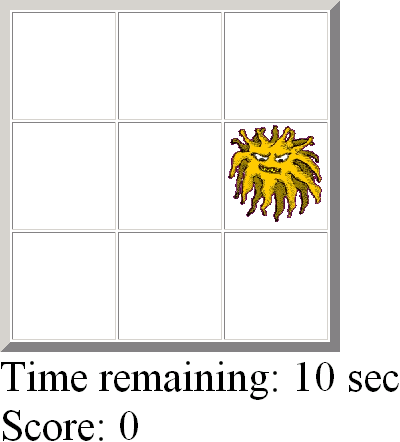
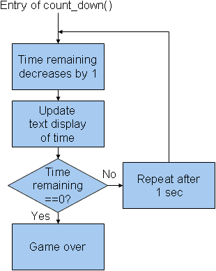
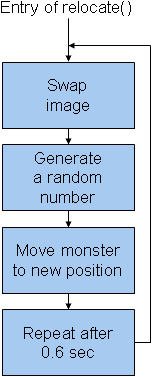
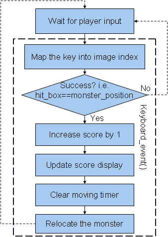

| Q | W | E |
| A | S | D |
| Z | X | C |
<body onload="game_start()">

time_remaining = time_remaining - 1;
var timer_element = document.getElementById("timer_text");
timer_element.innerHTML = "Time remaining: " + time_remaining + " sec";
if (time_remaining == 0)
game_over();
else
count_down_timer = setTimeout("count_down()", 1000);
clearTimeout(moving_timer);
alert("Times up!!!");

| document.images[0] | document.images[1] | document.images[2] |
| document.images[3] | document.images[4] | document.images[5] |
| document.images[6] | document.images[7] | document.images[8] |
document.images[monster_position].src = 'monster.png';
moving_timer = setTimeout("relocate()", 600);

<body onKeyDown="if (!finished) keyboard_event(event)">
var pressed_key = String.fromCharCode(event.keyCode);
var hit_box;
switch(pressed_key)
{
case 'Q': hit_box=0; break;
case 'W': hit_box=1; break;
. . . // And so on
}
if (monster_position == hit_box) {
// Update score and relocate monster
. . .
}
clearTimeout(moving_timer);
<audio src="./hammer_files/boo.mp3" type="audio/mpeg" width="0" height="0" id="boo" > </audio>
<audio src="./hammer_files/ouch.mp3" type="audio/mpeg" width="0" height="0" id="ouch"> </audio>
{kind=link}
{kind=link}